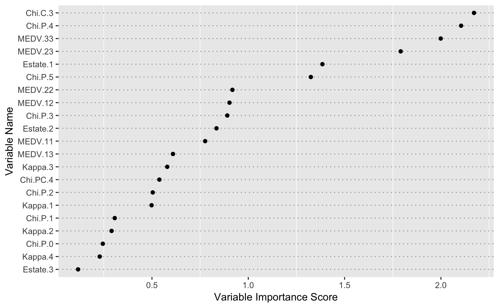

Measuring feature importance with ensemble partial least squares.
enpls.fs(x, y, maxcomp = NULL, cvfolds = 5L, reptimes = 500L, method = c("mc", "boot"), ratio = 0.8, parallel = 1L)
| x | Predictor matrix. |
|---|---|
| y | Response vector. |
| maxcomp | Maximum number of components included within each model. If not specified, will use the maximum number possible (considering cross-validation and special cases where n is smaller than p). |
| cvfolds | Number of cross-validation folds used in each model
for automatic parameter selection, default is |
| reptimes | Number of models to build with Monte-Carlo resampling or bootstrapping. |
| method | Resampling method. |
| ratio | Sampling ratio used when |
| parallel | Integer. Number of CPU cores to use.
Default is |
A list containing two components:
variable.importance - a vector of variable importance
coefficient.matrix - original coefficient matrix
See enpls.od for outlier detection with
ensemble partial least squares regressions.
See enpls.fit for fitting ensemble partial least
squares regression models.
data("alkanes") x = alkanes$x y = alkanes$y set.seed(42) fs = enpls.fs(x, y, reptimes = 50) print(fs)#> Variable Importance by Ensemble Partial Least Squares #> --- #> Importance #> Chi.P.4 2.0168868 #> MEDV.33 1.7889193 #> Estate.1 1.3571565 #> Chi.C.3 1.1743189 #> MEDV.23 1.0214323 #> Chi.P.5 0.8906559 #> Estate.2 0.7931773 #> MEDV.22 0.7620822 #> Chi.P.3 0.6886593 #> MEDV.12 0.5347140 #> Chi.PC.4 0.4891617 #> Kappa.3 0.4574433 #> MEDV.11 0.4347930 #> Kappa.2 0.3705118 #> MEDV.13 0.3487052 #> Chi.P.2 0.3364434 #> Chi.P.1 0.3191592 #> Kappa.1 0.2329475 #> Chi.P.0 0.1810485 #> Kappa.4 0.1749095 #> Estate.3 0.1040398plot(fs)